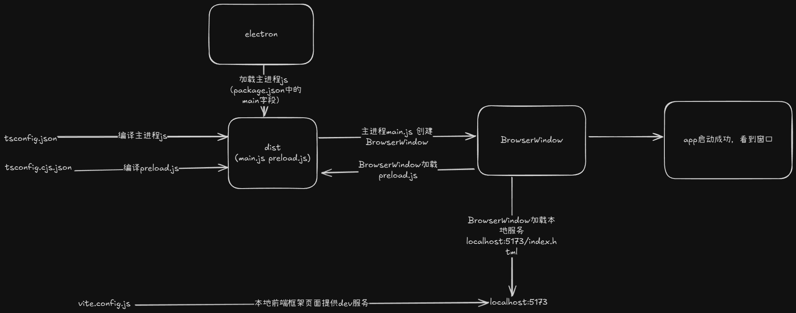

开发框架搭建
-
现在来搭建一个本地开发框架，要分两种情况
- 第一种，主进程使用 esm 模块和 typescript，package.json 设置
"type": "module"，运行或者打包的时候还是将主进程代码编译成 esm 模块 - 第二章，主进程依然使用 esm 模块，但是 package.json 设置
"type": "commonjs"，运行打包时编译成 commonjs 模块
- 第一种，主进程使用 esm 模块和 typescript，package.json 设置
-
这样分开的原因：
- electron v28.0.0 版本开始才全面支持 esm 模块，也就是之前的版本主进程代码都使用 commonjs 模块，而最后一个支持 windows7 系统的版本是
electron v22，如果还需要开发支持 win7 的应用，那就只能用 commonjs 模块来写主进程代码了。
Electron will be ending support for Windows 7/8/8.1 after version 22.x.y following Chromium's plan to end support. Older versions of Electron will continue to work, but no further updates will be made for these operating systems.- 虽然官方说 v22 是最后一个支持 win7 的版本，但是看到有人测试发帖说 v22 在 win7 运行会报错，所以兼容 win7 需要使用 v21.4.4 版本，v21 的最后一个版本

- electron v28.0.0 版本开始才全面支持 esm 模块，也就是之前的版本主进程代码都使用 commonjs 模块，而最后一个支持 windows7 系统的版本是
esm 模块
- 设置 ts 配置，这个设置作为编译主进程代码时的配置，而 preload.js 建议还使用 commonjs 所有创建第二个 ts 配置用于编译 preload.js
// tsconfig.json 或取名 tsconfig.es.json 编译主进程代码
{
"compilerOptions": {
"target": "esnext",
"module": "esnext",
"moduleResolution": "node",
"strict": true,
"sourceMap": true,
"resolveJsonModule": true,
"isolatedModules": true,
"esModuleInterop": true,
"lib": ["ESNext", "DOM"],
"outDir": "dist",
"rootDir": "src/main",
"typeRoots": [
"./node_modules/@types",
"./node_modules/**/*.d.ts",
"./src/main/types"
],
"types": ["node", "electron"],
"skipLibCheck": true,
"allowUmdGlobalAccess": true,
"allowSyntheticDefaultImports": true,
"forceConsistentCasingInFileNames": true,
},
"include": ["./src/main/**/*", "./src/main/types/global.d.ts"],
"exclude": [
"node_modules",
"dist",
"src/main/renderer/*",
"src/main/preload.ts"
]
}
// tsconfig.cjs.json 编译 preload.js
{
"compilerOptions": {
"allowJs": true,
"outDir": "./dist",
"module": "CommonJS",
"target": "ES6",
"moduleResolution": "Node",
"rootDir": "./src/main",
"esModuleInterop": true,
"skipLibCheck": true
},
"include": ["./src/main/preload.ts"],
"exclude": ["node_modules", "dist"]
}
- 然后再处理渲染进程页面的问题，demo 中简单使用原生 html，只需要将页面相关文件复制到最终 dist 目录即可完成编译，最后我们的 npm scripts
{
"scripts": {
"dev:ts": "tsc -p tsconfig.json", // 编译主进程 js
"dev:cjs": "tsc -p tsconfig.cjs.json", // 编译 preload.js
"dev:copy": "copyfiles -u 2 ./src/renderer/* ./dist", // 复制渲染进程页面到 dist
"dev:watch": "nodemon --watch ./src --ext ts,js,html,css --exec \"npm run dev\"", // 监测代码变化重新编译启动
"dev": "npm run clean && npm run dev:cjs && npm run dev:ts && npm run dev:copy && electron .", // 启动本地dev环境
"clean": "rimraf ./dist",
},
}
- 这样编译出来的所有文件都在 dist 目录下，所以主进程寻找
preload.js和html文件的时候就很方便，都基于当前模块的路径就能找到
const win = new BrowserWindow({
width: 800,
height: 600,
webPreferences: {
preload: path.join(__dirname, 'preload.js'),
},
});
global.win = win;
const html = path.join(__dirname, 'index.html');
- 如果渲染进程页面使用了其他前端框架，例如 vue react svelte 等，dev 环境就不需要复制 html 相关文件到 dist 目录了，只需要主进程窗口加载页面时区分 dev 和 prod 就行了
const win = new BrowserWindow({
show: false,
frame: false,
webPreferences: {
webSecurity: false,
nodeIntegration: true,
preload: path.join(__dirname, 'preload.js'),
},
});
if (app.isPackaged) {
// 判断打包后的环境，加载编译目录的文件，app.getAppPath() 获取当前应用程序的目录，获取到的目录就是 `你的安装目录/resources/app.asar`
const filePath = path.join(app.getAppPath(), 'maindist/index.html');
win
.loadFile(filePath)
.then(() => {
log.info('win.lodaFile successful');
})
.catch(err => {
logErrorInfo('win.lodaFile failed', err);
});
} else {
// dev开发环境直接加载前端框架(vue react svelte)的本地 dev 服务器提供的页面
win.loadURL('http://localhost:5173/login');
}
commonjs 模块兼容 win7
- 从主分支新建一个
feature/electron-v21.4.4分支，以支持 win7 系统打包，electron 版本切换到 21.4.4 版本
npm install electron@21.4.4 --save-dev
package.json中 type 设置为commonjs
{
"type": "commonjs"
}
- ts 配置文件修改 module 为 commonjs
{
"compilerOptions": {
"allowJs": true,
"outDir": "./maindist",
"module": "CommonJS",
"target": "esnext",
"moduleResolution": "Node",
"rootDir": "./main",
"removeComments": true,
"strict": true,
"esModuleInterop": true,
"skipLibCheck": true,
"resolveJsonModule": true,
"emitDecoratorMetadata": true,
"experimentalDecorators": true
},
"include": ["./main/**/*"],
"exclude": ["node_modules", "dist", "./main/preload.ts"]
}
- vite 配置文件中配置需要修改成 cjs
build.lib.formatsbuild.rollupOptions.output.format
import { defineConfig } from 'vite';
import path from 'path';
import { nodeResolve } from '@rollup/plugin-node-resolve';
import commonjs from '@rollup/plugin-commonjs';
const nodeBuiltins = [
'node:http',
'node:https',
'node:fs',
'node:fs/promises',
'node:path',
'node:url',
'node:child_process',
'module',
];
export default defineConfig({
root: path.resolve(__dirname, './main'),
build: {
outDir: path.resolve(__dirname, 'maindist'),
emptyOutDir: false,
target: 'node22',
lib: {
entry: ['index.ts'],
formats: ['cjs'],
fileName: (format, entryName) => {
return `${entryName}.js`;
},
},
rollupOptions: {
external: [
...nodeBuiltins,
'electron',
'electron-log',
'dotenv',
'electron-updater',
'iconv-lite',
'better-sqlite3',
],
plugins: [
nodeResolve({
preferBuiltins: true,
browser: false,
}),
commonjs({
include: /node_modules/,
esmExternals: false,
}),
],
output: {
entryFileNames: 'index.js',
format: 'cjs',
externalLiveBindings: true,
globals: {
electron: 'electron',
},
sourcemap: true,
sourcemapExcludeSources: false,
},
},
},
});